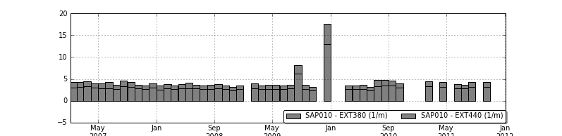

<table border="1" class="l-grid" id="ext-gen1491"> <tbody><tr class="l-row"><td id="ext-gen1496">Naam</td><td id="ext-gen1490">Polder Groot Mijdrecht  en Polder de Eerste Bedijking (oost)</td></tr><tr class="l-row"><td id="ext-gen1495">Ident</td><td id="ext-gen1489">2540</td></tr><tr class="l-row"><td id="ext-gen1494">Status</td><td id="ext-gen1492">-</td></tr><tr class="l-row"><td id="ext-gen1493">Waterbeheerder</td><td id="ext-gen1488">Waternet</td></tr></tbody></table></body>




